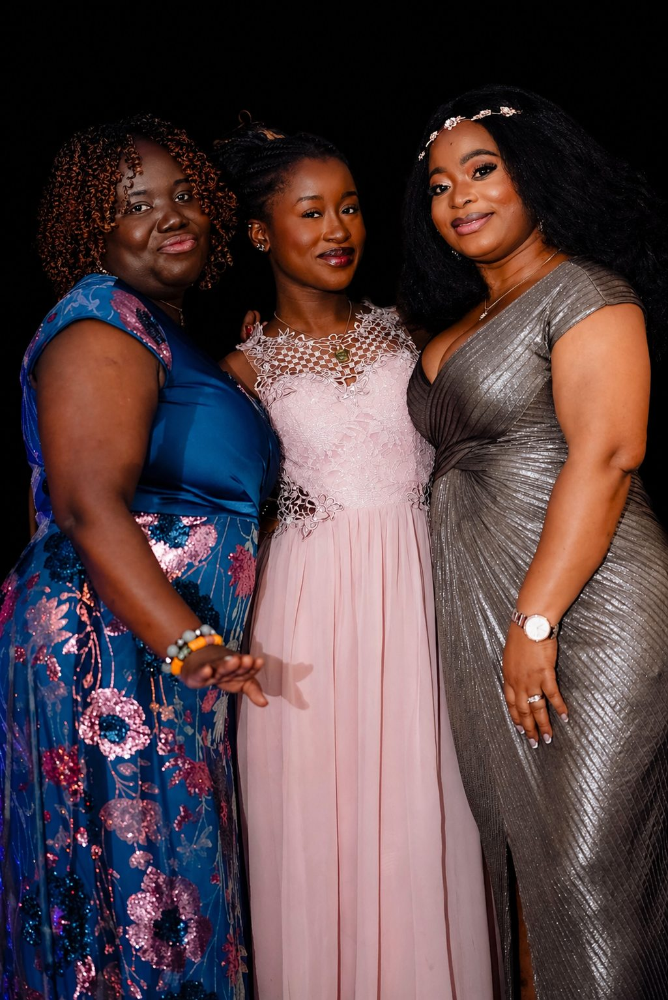

DOXA Sanctuary
Walking boldly in grace, purpose, and the power of the Holy Spirit.
Who We Are
The Women's Ministry at DOXA Sanctuary is a community of women who are walking boldly in grace, purpose, and the power of the Holy Spirit. This ministry creates a space where every woman is seen, celebrated, and equipped to fulfil her God-given calling — from the young woman finding her identity to the seasoned believer walking in legacy.
What We Do
Every gathering is a space to encounter God, build sisterhood, and step into purpose.
Purposeful retreats designed to help women disconnect from the noise, encounter God, and come back renewed and refocused.
Deep, Spirit-led study of the Word that grounds women in truth and empowers them to live with conviction and clarity.
Older women pouring into younger ones — sharing wisdom, experience, and faith across every generation.
Special services and events that celebrate women, stir faith, and release the power of God in every room.

Open to All Women
Whether you are a young woman still discovering who you are, a wife and mother navigating the fullness of life, or a woman in her seasoned years carrying a legacy — there is a place for you in this ministry. We do not just gather for events; we do life together.
In this ministry you will find real women, real faith, and real community. Women who pray for each other, celebrate each other, and refuse to let anyone walk alone. You were created for more — and this is a community that will help you step into it.
Join the SisterhoodOur Heart
Three convictions at the core of everything we do in this ministry.
Every woman who walks into this ministry is fully known, fully valued, and fully welcomed — exactly as she is, with no performance required.
God has placed a specific calling and gifting inside every woman. This ministry exists to help you discover it, develop it, and deploy it for His glory.
We are a sisterhood — in every season of life, in every challenge and victory, you will find women standing with you, praying for you, and believing with you.
Leadership
Dr. Mrs. Doreen Owusu leads the Women's Ministry with grace, wisdom, and a mother's heart. Under her leadership, this ministry has become a sanctuary within a sanctuary — a space where every woman is embraced, empowered, and released into her purpose. Through retreats, Bible studies, mentorship, and powerful gatherings, she nurtures women in every season of life and reflects the heart of God in everything she does.
FAQs
Any woman is welcome — regardless of age, background, or where you are in your faith journey. Whether you are a long-time believer or just beginning to explore faith, you belong here.
We gather for regular Bible studies, special events, and retreats throughout the year. Fill out the form below to get connected and receive updates on all upcoming gatherings.
Especially for you. This ministry was built for real women in real seasons of life. You do not need to have it all together to show up. Come as you are — there is love, prayer, and community waiting for you.
Simply show up on Sunday and introduce yourself, or fill out the connect form below. Our ministry team will personally reach out to welcome you and help you find your place in the sisterhood.
Get Connected
Fill out our connect form and our team will personally reach out to welcome you into the sisterhood.
Join the Sisterhood